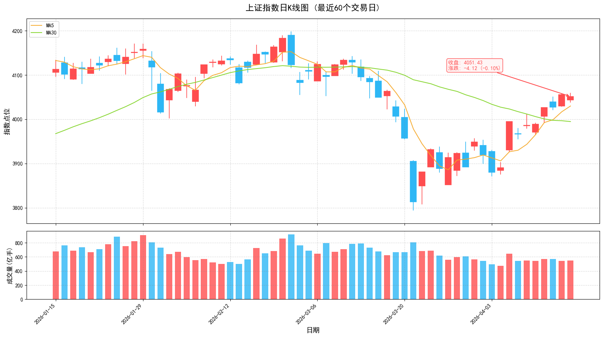

2026年4月19日 | 周日
创业板指创11年新高，一季度GDP增长5%超预期；伊朗开放霍尔木兹海峡，地缘风险缓解；4月进入业绩验证期，市场从题材博弈转向业绩定价。
周五（4月17日）上证指数微跌0.10%收于4051点，深证成指涨0.60%，创业板指大涨1.43%报3678.29点，创2015年6月以来近11年新高。两市成交额达2.45万亿元，市场情绪高涨。
伊朗外长阿拉格齐发文称，鉴于黎巴嫩和以色列达成停火，伊朗对所有商船开放霍尔木兹海峡。美国总统特朗普随后证实该消息。地缘政治风险显著缓解，国际油价盘中跳水，WTI原油跌超5%至86.41美元/桶。
国家统计局数据显示，2026年一季度我国GDP同比增长5.0%，高于市场预期的4.8%，较去年四季度加快0.5个百分点。第三产业增加值增长5.2%，工业增加值增长6.1%，装备制造业、高技术制造业增加值分别增长8.9%和12.5%。
瑞银证券指出，A股市场对于盈利复苏的讨论尚不充分，今年有望是盈利和估值双重驱动的慢牛行情。海外投资者对A股的兴趣在提高，焦点可能从大白马转向出海、科技等主题，预期二季度A股向上，看好成长股表现，小盘股会跑赢大盘股。
央行行长潘功胜表示，地缘政治冲突对全球供给体系造成严峻冲击，各国应坚定支持多边主义。央行将实施好适度宽松的货币政策，以高质量金融服务助力中国式现代化，为全球经济增长贡献中国力量。
深圳海关数据显示，一季度深圳民营企业进出口9592.3亿元创历史新高，增长42.4%，占比超七成，贡献全市外贸86.2%增量。3D打印机出口增长70.2%、数字照相机增长65.1%，规模均居内地城市首位。
北向资金持续回流，外资对中国资产关注度提升。前十大重仓股：宁德时代、贵州茅台、美的集团、招商银行、中际旭创、北方华创、紫金矿业等。

指数在4050点附近震荡，可继续持有。关注MA5支撑，跌破则降低仓位。创业板指强势，可适当配置成长股。
关注AI算力、新能源、商业航天等热点板块。避免追高，等待回调至MA5附近介入。聚焦一季报业绩超预期品种。
本报告仅供参考，不构成投资建议。市场有风险，投资需谨慎。关注霍尔木兹海峡开放后续进展、美联储降息预期、一季报业绩披露等对市场的影响。
A股日报 | 数据来源：东方财富、同花顺、证监会官网
2026年4月19日